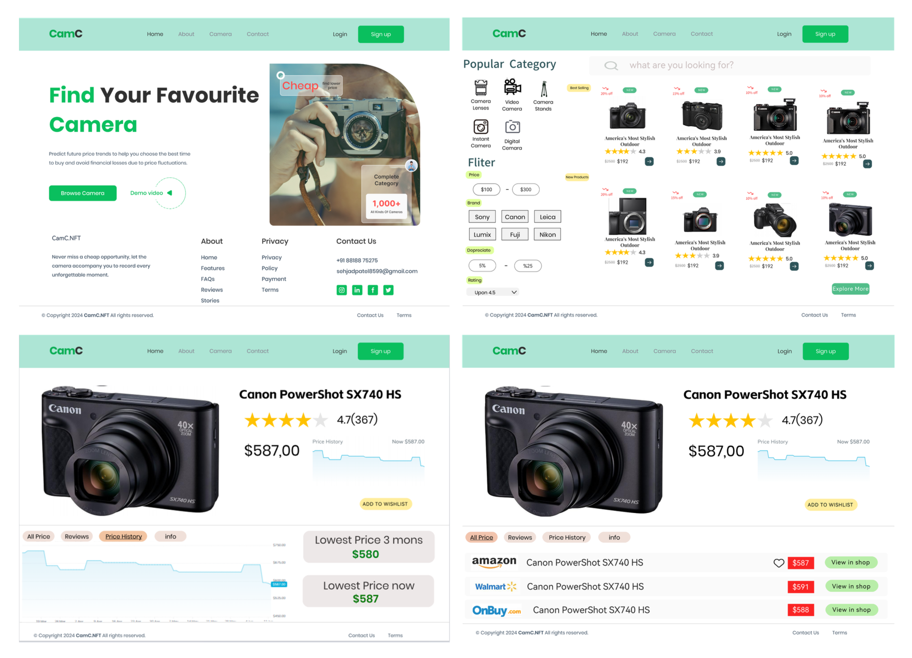
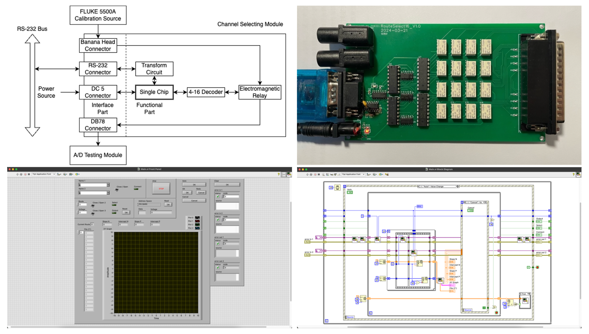

Welcome 🤗
Hi, this is Yuxuan Zhang from China 🇨🇳.
I am currently pursuing my Master's degree at the National University of Singapore. I completed my undergraduate studies at the Harbin Institute of Technology.
My research interests focus on Robotics, Computer Vision and HCI. For more detailed information you can check my , and .
Always looking for a PhD opportunity... 🥲
Education 📖
-
Master in Artificial Intelligence Systems
National University of Singapore
Aug, 2025 - Aug, 2026- GPA: TBD
- Courses: Machine Reasoning Systems, Pattern Recognition Systems, Intelligent Robotics Systems, Intelligent Sensing Systems, Practical Language Processing
-
Graduate Diploma in System Analysis
National University of Singapore
Jul, 2023 - Jan, 2025- GPA: 4.11 / 5.0
- Courses: Software Analysis & Design, Machine Learning, Web Application Development, Mobile Application Development
-
Bachelor in Intelligent Test and Control Engineering
Harbin Institute of Technology
Sept, 2020 - Jun, 2024- GPA: 4.02 / 5.0
- Courses: Intelligent Measurement & Control Systems, Distributed Test & Control Systems, Intelligent Sensing, Embedded Systems, Artificial Intelligence, Pattern Recognition & Machine Learning, FPGA Digital Systems, Digital Signal Processing, Microwave Technology
Publications 📑
-
Learning to Synthesize Novel Human-Object Interaction in Collaborative Task-Based Settings
AAAI 2026 Workshop HCM Submission
Author: Haziq Razali, Yuxuan Zhang, Qianli Xu, Yiannis Demiris- Proposed a novel framework to address the lack of collaborative (multi-human) interaction datasets, integrating multi-view RGBD data collection with LLM-based reasoning.
- Designed a data capture setup using wide-view and close-up RGBD cameras for markerless 3D reconstruction of human and object motion.
- Utilized SOTA models for tracking, including 4D-Humans (body), HaMeR (hands), and SAM-6D (object), to generate temporally aligned 3D meshes from RGBD streams.
- Employed Large Language Models (LLMs) to infer collaborative intent, parse complex tasks (e.g., "set the table") into semantic subtasks, and allocate roles to participants.
- Used the LLM-generated task decomposition to guide a generative model, enabling the synthesis of long-horizon, collaborative human-object interaction sequences.

-
VLA-OS: Structuring and Dissecting Planning Representations and Paradigms in Vision-Language-Action Models
NeurIPS 2025 Workshop EWM Oral
Author: Chongkai Gao, Zixuan Liu, Zhenghao Chi, Junshan Huang, Xin Fei, Yiwen Hou, Yuxuan Zhang, Yudi Lin, Zhirui Fang, Lin Shao- Proposed VLA-OS, a unified architecture suite, to systematically dissect and compare different planning paradigms and representations in VLA models.
- Analyzed and benchmarked three mainstream VLA paradigms: ActionOnly-VLA, Integrated-VLA, and Hierarchical-VLA.
- Designed and evaluated three distinct task planning representations: Language Reasoning, Visual Reasoning (e.g., bounding boxes, affordance), and Image Foresight (goal images).
- Demonstrated experimentally that the Hierarchical-VLA paradigm generally achieves superior performance and that visually grounded planning representations outperform language-based representations.

Experience 💼
-
Research Intern (Hardware / Software / System Design)
Advanced Micro Devices (Singapore) Pte Ltd
Mar, 2026 - Aug, 2026 -
Humanoid Robotics Development Intern
FatFish Technology Pte Ltd
Oct, 2025 - Dec, 2025 -
Research Intern
AdaComp Lab, National University of Singapore
Jun, 2025 - Sept, 2025 -
Research Intern
I2R, Agency for Science, Technology and Research (A*STAR) Mar, 2025 - Dec, 2025 -
Research & Development Intern
Changjiang Intelligent Technology Pte Ltd
Jul, 2021 - Aug, 2021 -
Game VFX Design Intern
Boke Network Technology (Hubei) Co Ltd
Jan, 2021 - Feb, 2021
Projects 💻
-
Motion Analysis in Gym
Sept, 2025 - Oct, 2025
- Used 4D-Humans for human body tracking, HAMER for human hand tracking. Integrated SMPL model and MANO model into SMPLX model.
- Trained a GRU (LSTM) model to classify different exercise types.
- Trained AutoEncoders to correct human's motion in the certain exercise.
-
AI-Powered Scheduling System
Sept, 2025 - Oct, 2025
- Used Evolution Algorithm to train task evaluation model (task attributes as input, predicted energy and pressure as output).
- Developed a rule-based (deadline first, priority second) Scheduler to assign the flexible tasks.
- Used MongoDB for database, FastAPI for backend, React.js for frontend.
-
Deploying Gaussian Splatting on Apple Metal Chip
Sept, 2024 - Jan, 2025
- Used OpenCV to calibrate the iPhone's camera.
- Used RealityKit to pre-generate the scene model as the warmup of Gaussian Splatting, and to generate camera poses instead of COLMAP.
- Optimized Gaussian Splatting workflow on Apple's M2 Chip, by transfer C++ to Swift and PyTorch to Metal.
- Used Swift for UI.
-
CamC: Multi-Platform Camera Price Comparison & Prediction
Jun, 2024 - Aug, 2024
- Trained a kNN model for camera classification, trained SVM models for camera price prediction.
- Used MySQL for database, SprintBoot for backend, React.js for web frontend, AndroidSDK for mobile frontend.
 -
Automated Calibration System for A/D Modules
Oct, 2023 - May, 2024
- Designed a 16-channel selection circuit, designed the PCB board, soldered the circuit board.
- Developed embedded C firmware to enable RS-232 communication and implement channel selection functionality on the circuit board.
- Enabled RS-232 communication to control the selection circuit and calibration source, enabled PXIe communication to read the output of the AD product.
- Developed LabVIEW automation to control channel selection, control standard voltage outputs, read AD outputs, and perform AD calibration.
 -
Automated Signal Conditioning Circuit Testing System
Sept 2023
- Enabled LAN communication to control instruments for synchronized measurement.
- Developed LabVIEW automation.
-
Automated Drone Docking & Charging Platform
Oct, 2021 - Sept, 2022
- Provincial-Level College Students' Innovative Entrepreneurial Training Program
- Used DJI Matrice 100 aircraft, Manifold 2-C flight control, and OpenMV camera.
- Used GPS for general location (>5m), tracked AprilTag for precise location (<5m).
- Used DJI OnboardSDK to develope automated landing algorithms.
-
3D Port Reconstruction - Tianjin Port
Oct, 2020 - Sept, 2021
- In Unity, imported the satellite elevation map as 3D model, the satellite orthophoto as texture, to construct a 3D scene. Imported interactive objects.
- Developed C# scripts to control user perspective, enable object interactions, and simulate dynamic weather effects.
- Packaged and deployed the complete simulation as an immersive application for VR devices.
About Me 😎
To contact me...
-
Website:
- LinkedIn: www.linkedin.com/in/yuxuanzhang271
- GitHub: github.com/YuxuanZhang271
-
Email:
- School: e1216649@u.nus.edu
- Personal: 942326836zyx@gmail.com
- Address: #01-15, 28 West Coast Road, Singapore 127449